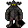

鉄の悪魔 Iron devil
英語版 CrawlWiki の記事「Iron devil」(対象の版の記載なし、2024-11-20 版)の翻訳です。原文の著者は編集履歴をご覧ください。
この記事は 古い版 の時点の内容で、最新の 0.34 とは違うところがあるかもしれません。
廃止: この記事は、ゲームから削除された要素について書いている。過去の記録として残しているだけだ。
| 鉄の悪魔 4  | |
|---|---|
| HP | 29-58 |
| HD | 8 |
| XP | 401 |
| 速度 | 10 |
| AC | 16 |
| EV | 8 |
| 意志力 | {{{willpower}}} |
| 攻撃1 | 14 (打撃: 通常) |
| 攻撃2 | 14 (打撃: 通常)
|
| 耐性 | 天罰, rC+, rElec++, rPois+, rN+++, rTorm, rRot |
| 弱点 | 神聖, 神罰 |
| 生息地 | 陸上 |
| 知能 | 高い |
| 使用 | 武器と防具 初期装備 扉を開ける |
| 分類 | 悪魔 |
| 体格 | 中くらい |
| 種類 | 鉄の悪魔、鉄の悪魔 |
| フラグ | |

| 金属の肌をした、おぞましい人型の姿だ。魔法の攻撃を持たず足も遅いが、その欠点を腕力で補っている。 |
基本情報
鉄の悪魔は4級悪魔で、AC がそこそこ高く、耐性も多い。ナーガ並みに足が遅く、泳げもしないので、逃げるのは難しくない。正面から相手をするなら、重い武器を持っていることが多いので、レベルの低いキャラクターには脅威になりうる。ふつうはアビス、パンデモニウム、地獄(特に鉄の都ディース)に現れるが、迷宮の浅い階のヴォールトに出てくることもある(もちろん、しっかり閉じ込められている)。
小技
地獄にいるなら、ほぼ無視してかまわない。輝けるものかマクレブを信仰しているなら、回復のために倒しておこう。迷宮の浅い階でヴォールトのせいで出くわしても、AC と耐性のせいでまず倒せないので、さっさと立ち去ろう。